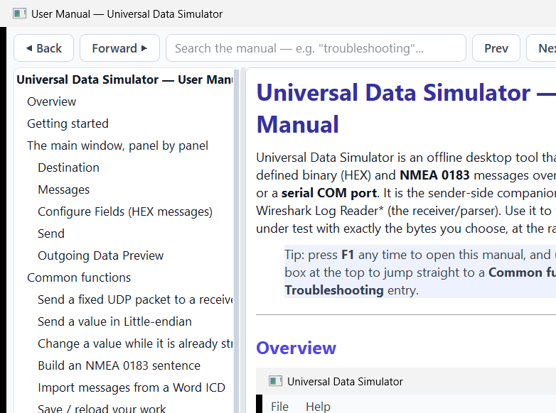
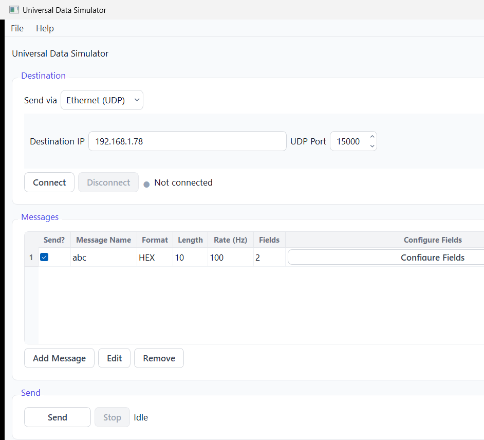
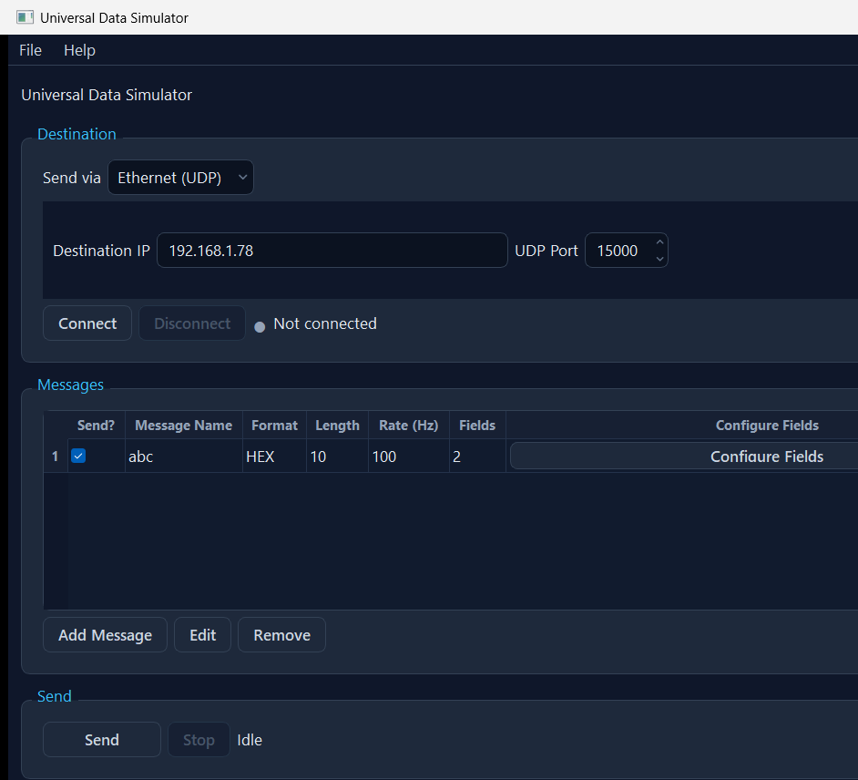

Universal Data Simulator is an offline desktop tool that transmits user-defined binary (HEX) and NMEA 0183 messages over UDP, TCP, or a serial COM port. It is the sender-side companion to *Universal Wireshark Log Reader* (the receiver/parser). Use it to feed a system under test with exactly the bytes you choose, at the rate you choose.
Tip: press F1 any time to open this manual, and use the search box at the top to jump straight to a Common function or a Troubleshooting entry.
This manual is built into the app (Help → User Manual, or F1). The list on the left is a clickable table of contents; the box at the top searches the whole manual — type a word like troubleshooting, endian or checksum and press Enter (or Next/Prev) to step through every match. The same content is also provided as simulator_manual.docx.


The window is a single top-to-bottom flow:
The same window in the Slate Dark theme (toggle with Ctrl+T):

The connection bar shows how many connections are defined; Configure… opens the manager. Each connection has a Name and a Transport: UDP (destination IP + port), TCP (host + port + Server/Client role), or Serial (COM port with baud / data bits / parity / stop bits; Refresh re-scans the ports). Test Connection opens the link, sends a short health-check message and reports OK / the failure reason, without starting a stream. The connections are not held open while you edit — the simulator opens exactly the ones it needs when you press Send, and closes them on Stop. The bar dot is gray when idle, green while sending, red if a link drops.
Each row is a message: Send? tick, Name, Format (HEX or NMEA), payload Length, Rate (Hz), field count, a Configure Fields button and a Connection selector (which destination the message is sent on; the first connection is the default).
.docx ICD and turns its tables into ready-to-send messages.Columns: Field Name · Byte Offset · Type · Length · Endian · Resolution · Value · Hex (auto) · Bits.
Send (F5) verifies everything first — at least one connection defined, ticked messages, and that every field encodes and fits — reports all problems in one dialog (each with a reason and a solution), then opens and health-checks every connection the ticked messages need before streaming each at its own rate until Stop (Shift+F5). You can edit values, rates or the Send? tick while streaming — the affected stream updates in place without a gap.
The bottom box shows the last 5 payloads handed to the link, newest at the bottom, in hex.
TEST, length 4, rate 1 Hz) → Configure Fields.uint, length 4), type a Value, Save.In Configure Fields, set that field's Endian column to Little-endian. A uint32 value of 1 becomes 01 00 00 00 on the wire instead of 00 00 00 01. String fields are never reversed.
With Send running, open Configure Fields, change the Value, Save. The live stream picks up the new bytes immediately — no Stop/Start needed. Changing the Rate retunes the cadence live; toggling Send? starts or stops just that one message.
Add a message and set its Format to NMEA; pick the sentence (e.g. GGA) and talker (e.g. GP). In Configure Fields, type each field's token value; the simulator builds $GPGGA,...*HH<CR><LF> with a correct XOR checksum.
File → Import ICD… (Ctrl+I) → pick the .docx → tick the tables that hold field definitions → Build / Preview → review → OK. Each table becomes a message with its byte offsets, lengths and types filled in; type the values and send. Names that clash with existing ones are auto-renamed (ttd → ttd_1) with a warning.
In Configure Fields, use the Excel menu → Import to load fields from a .xlsx file (same column layout as CSV), or Export to write the current fields to Excel.
File → Export Messages (JSON) writes all messages — fields, send rate, format, values — to a single JSON file. File → Import Messages (JSON) loads them back, appending to the current list (clashing names are auto-renamed). The format is shared with the reader, so you can round-trip definitions between the two apps without data loss.
In Configure Fields, change the Offsets in dropdown from Bytes to Words (2 bytes).
File → Save Setup writes the whole setup (connections + messages + fields + values + rates + each message's connection binding) to a JSON file; Open Setup loads one. The setup is also auto-saved on close and restored on next launch. Setups saved by an older single-destination build still load — their one destination becomes the first connection.
| Symptom | Likely cause | Fix |
|---|---|---|
| "Cannot Send" — a UDP connection failed to open | Bad IP, or no route to the destination | Re-check the IP/port (use Test Connection in the manager); confirm the network route. The dialog states the exact reason. |
| "Cannot Send" — a TCP connection failed to open | Remote host not listening, wrong role, or firewall | Server mode listens; Client mode connects. Confirm the remote end is running and reachable; Test Connection. |
| "Cannot Send" — a serial connection failed to open | COM port busy, missing, or wrong settings | Close other apps using the port; press Refresh; check baud/data/parity/stop bits; Test Connection. |
| Bar dot turns red while sending | A link dropped mid-stream (cable pulled, server closed) | Sending stops with the reason; fix the link and press Send again. |
| "Cannot Send" dialog lists problems | No connection defined, no message ticked, or a field value doesn't fit | Fix each listed item (each has a solution). Define a connection; tick at least one message; correct out-of-range values. |
Hex (auto) cell shows — in red | The Value can't be encoded in that type/length | Hover the cell for the reason; widen the Length, change the Type, or enter a value in range. |
| Value too big for the field | Value exceeds the type/length range | Use a wider type or larger Length, raise the Resolution, or send a smaller value. |
| Bytes arrive byte-swapped at the receiver | Endianness mismatch | Set the field's Endian to match the receiver (Big vs Little). |
| Nothing received over UDP | Green dot only means "sent to the OS" | Confirm the receiver is listening on that exact IP/port; check firewalls; try the parser app's Live mode as a receiver. |
| NMEA sentence rejected by the receiver | Bad talker/formatter or a token contains , * $ ! | Use a valid 2-char talker + 3-char formatter; remove delimiter characters from token values. |
| ICD import offsets look shifted by one | The ICD's offset base (0- vs 1-based) was mis-detected | In the import's Table Settings, flip the Offset base; every review offset is also editable. |
| Send rate seems capped | The timer fires at most once per millisecond | Rates above ~1000 Hz are clamped; use 0.001–1000 Hz. |
| Shortcut | Action |
|---|---|
| F1 | Open this user manual |
| Shift+F1 | Keyboard shortcuts box |
| Ctrl+O / Ctrl+S / Ctrl+Shift+S | Open / Save / Save-As setup |
| Ctrl+I | Import ICD (.docx) |
| F5 / Shift+F5 | Send / Stop |
| Ctrl+T | Toggle Light/Dark theme |
| Ctrl+Q | Quit |
| Insert / Ctrl+E / Ctrl+Delete | (Field dialog) Add / Edit / Remove field(s) |
| Alt+Up / Alt+Down | (Field dialog) Move the selected field |
round(value ÷ resolution).$TALKER+FORMATTER,fields*CHECKSUM)..docx describing message/field layouts.